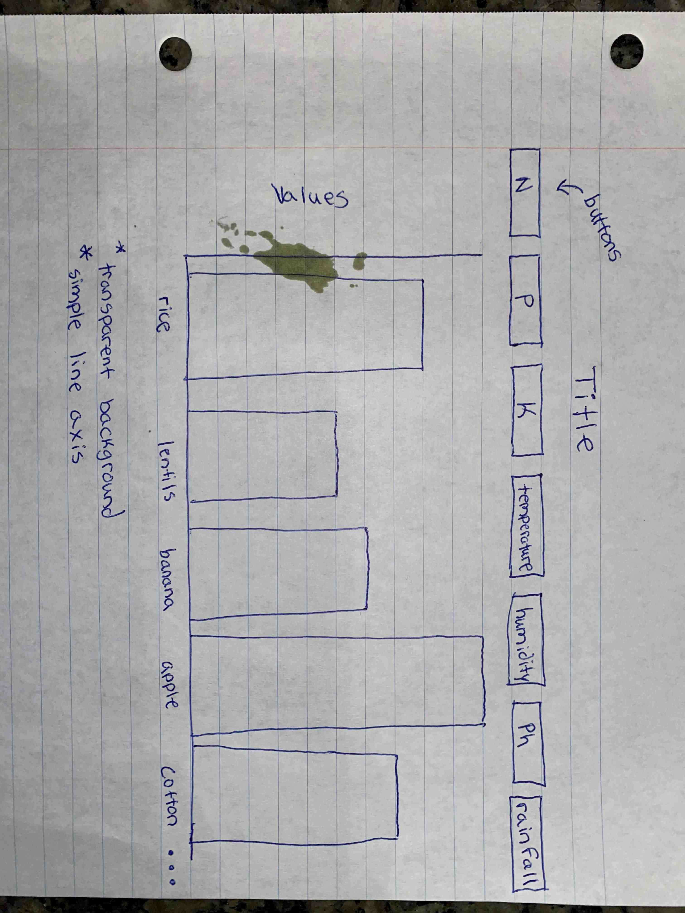

For this project I started off by finding a manageable dataset. This is my first time working with html, javascript, and D3. Finding a simplistic dataset was crucial to my success on this project. Luckily, I found a dataset on crops, the attributes showed the quanitity of each attribute based on each crop. The dataset was originally designed for predicting purposes for farmers. Now that I found my data, I had to download an integrated development environement to code my project. The notepad on windows does not color code, so it is harder to keep track of what is being typed. I decided to download Visual Studio Code, it worked out great. I coded a skeleton of my idea and slowly added to my code overtime. My first draft of my idea is shown below.
After writing up my first draft of code, I spent a lot of time researching on how to make everything work. The lectures did not contain the information I needed and the book was not helpful in the specific questions I had. So, I spent many hours researching how to import csv data and select specific columns for each graph. It was less complicated than I initially thought but again, this is my first time coding in these languages. I decided to redesign the graph to make it easier to code. There were many videos online about making buttons but not enough information on how to code a button that shuffles graphs. Below you can see the second draft of my idea of the interactive visual. I decided to make seperate buttons for each variable, this would make the coding process less complicated.
The concept of the interactive visual is simple. If a farmer were to access the website they would be able to view the different crops and how they are associated to the variables. The taller the bar is, the more that crops needs of that particular variable. For example, if a farmer asked, "Which crop consumes the most rainfall water?" All the farmer would have to do is click on the rainfall button and review the crops. It is clear to see that rice is the greatest consuming crop of rainfall water.